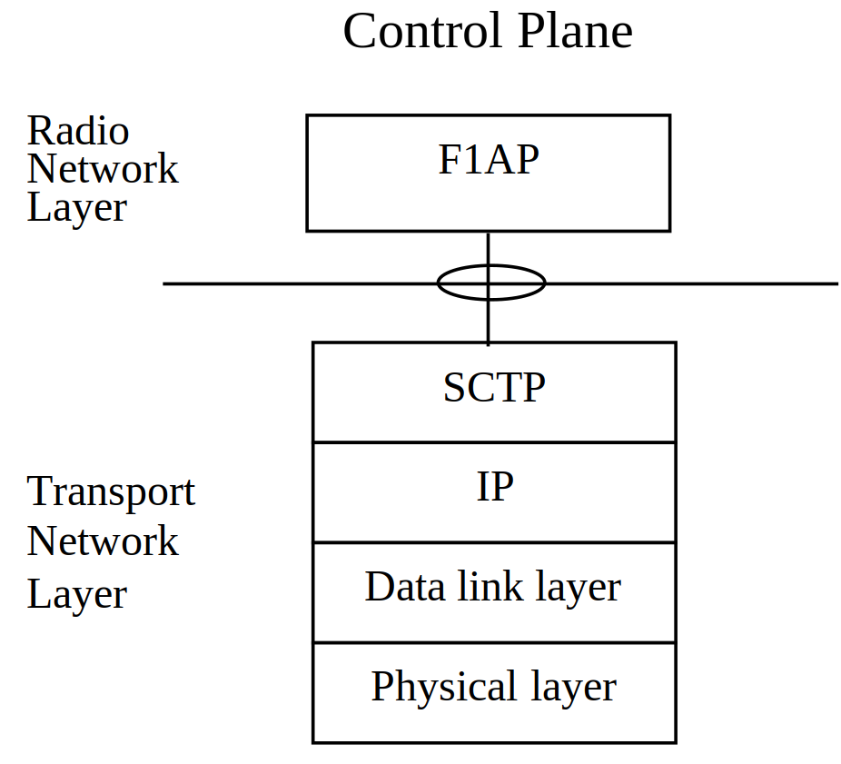
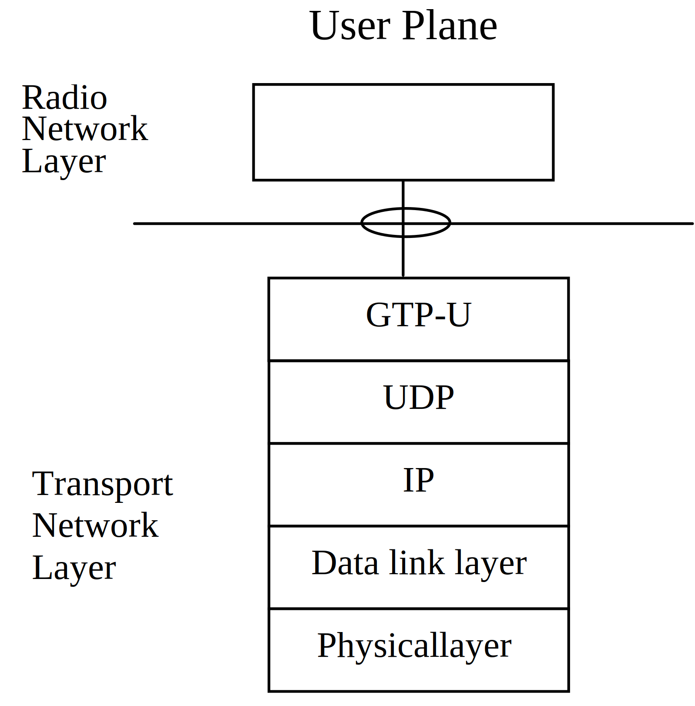

3GPP TS 38.470 V17.6.0 (2023-09)
Technical Specification
3rd Generation Partnership Project;
Technical Specification Group Radio Access Network;
NG-RAN;
F1 general aspects and principles
(Release 17)
The present document has been developed within the 3rd Generation
Partnership Project (3GPP TM) and may be further elaborated
for the purposes of 3GPP..
The present document has not been subject to any approval process by the
3GPP Organizational Partners and shall not be implemented.
This Specification is provided for future development work within 3GPP
only. The Organizational Partners accept no liability for any use of
this Specification.
Specifications and Reports for implementation of the 3GPP TM
system should be obtained via the 3GPP Organizational Partners'
Publications Offices.
Keywords
NR-RAN
3GPP
Postal address
3GPP support office address
650 Route des Lucioles - Sophia Antipolis
Valbonne - FRANCE
Tel.: +33 4 92 94 42 00 Fax: +33 4 93 65 47 16
Internet
http://www.3gpp.org
Copyright Notification
No part may be reproduced except as authorized by written
permission.
The copyright and the foregoing restriction extend to reproduction in
all media.
© 2023, 3GPP Organizational Partners (ARIB, ATIS, CCSA, ETSI, TSDSI, TTA, TTC).
All rights reserved.
UMTS™ is a Trade Mark of ETSI registered for the benefit of its members
3GPP™ is a Trade Mark of ETSI registered for the benefit of its
Members and of the 3GPP Organizational Partners
LTE™ is a Trade Mark of ETSI registered for the benefit of its Members
and of the 3GPP Organizational Partners
GSM® and the GSM logo are registered and owned by the GSM Association
Foreword 5
1 Scope 6
2 References 6
3 Definitions and abbreviations 6
3.1 Definitions 6
3.2 Abbreviations 7
4 General aspects 8
4.1 F1 interface general principles 8
4.2 F1 interface specification objectives 8
4.3 F1 interface capabilities 8
4.4 Void 9
5 Functions of the F1 interface 9
5.1 General 9
5.2 F1-C functions 9
5.2.1 F1 interface management function 9
5.2.2 System Information management function 9
5.2.3 F1 UE context management function 10
5.2.4 RRC message transfer function 11
5.2.5 Paging function 12
5.2.6 Warning messages information transfer function 12
5.2.7 Remote Interference Management (RIM) message transfer function 12
5.2.8 Trace function 12
5.2.9 Load management function 12
5.2.10 Self-optimisation support function 12
5.2.11 Positioning function 12
5.2.12 IAB support function 13
5.2.13 NR MBS function 13
5.2.14 PDC measurement function 13
5.2.15 QMC support function 13
5.3 F1-U functions 13
5.3.1 Transfer of user data 13
5.3.2 Flow control function 13
5.4 TEIDs allocation 14
6 Procedures of the F1 interface 14
6.1 Control plane procedures 14
6.1.1 Interface Management procedures 14
6.1.2 Context Management procedures 14
6.1.3 RRC Message Transfer procedures 14
6.1.3A Warning Message Transmission procedures 15
6.1.4 System Information procedures 15
6.1.5 Paging procedures 15
6.1.6 Void 15
6.1.7 Radio information transfer procedures 15
6.1.8 UE Tracing procedures 15
6.1.9 Load management procedures 15
6.1.10 Self-optimisation support procedure 15
6.1.11 Positioning procedures 16
6.1.12 IAB procedures 16
6.1.13 NR MBS procedures 16
6.1.14 PDC Measurement procedures 17
6.1.15 QMC procedures 17
6.2 User plane procedures 17
7 F1 interface protocol structure 17
7.1 F1 Control Plane Protocol (F1-C) 17
7.2 F1 User Plane Protocol (F1-U) 18
8 Other F1 interface specifications 18
8.1 NG-RAN F1 interface: layer 1 (3GPP TS 38.471) 18
8.2 NG-RAN F1 interface: signalling transport (3GPP TS 38.472) 18
8.3 NG-RAN F1 interface: F1AP specification (3GPP TS 38.473) 18
8.4 NG-RAN F1 interface: data transport and transport signalling (3GPP TS 38.474) 18
8.5 NG-RAN F1 interface: user plane protocol (3GPP TS 38.425) 18
Annex A (informative): Change history 20
This Technical Specification has been produced by the 3rd Generation Partnership Project (3GPP).
The contents of the present document are subject to continuing work within the TSG and may change following formal TSG approval. Should the TSG modify the contents of the present document, it will be re-released by the TSG with an identifying change of release date and an increase in version number as follows:
Version x.y.z
where:
x the first digit:
1 presented to TSG for information;
2 presented to TSG for approval;
3 or greater indicates TSG approved document under change control.
y the second digit is incremented for all changes of substance, i.e. technical enhancements, corrections, updates, etc.
z the third digit is incremented when editorial only changes have been incorporated in the document.
The present document is an introduction to the 3GPP TS 38.47x series of technical specifications that define the F1 interface. The F1 interface provides means for interconnecting a gNB-CU and a gNB-DU of a gNB within an NG-RAN, or for interconnecting a gNB-CU and a gNB-DU of an en-gNB within an E-UTRAN.
The following documents contain provisions which, through reference in this text, constitute provisions of the present document.
- References are either specific (identified by date of publication, edition number, version number, etc.) or non‑specific.
- For a specific reference, subsequent revisions do not apply.
- For a non-specific reference, the latest version applies. In the case of a reference to a 3GPP document (including a GSM document), a non-specific reference implicitly refers to the latest version of that document in the same Release as the present document.
[1] 3GPP TR 21.905: "Vocabulary for 3GPP Specifications".
[2] 3GPP TS 38.401: "NG-RAN; Architecture Description".
[3] 3GPP TS 38.471: "NG-RAN; F1 layer 1".
[4] 3GPP TS 38.472: "NG-RAN; F1 signalling transport".
[5] 3GPP TS 38.473: "NG-RAN; F1 Application Protocol (F1AP)".
[6] 3GPP TS 38.474: "NG-RAN; F1 data transport".
[7] 3GPP TS 38.425: "NG-RAN; Xn interface user plane protocol".
[8] 3GPP TS 38.300: "NR; Overall description; Stage-2".
[9] 3GPP TS 37.340: "NR; Multi-connectivity; Overall description; Stage-2".
[10] 3GPP TS 38.321: "NR; Medium Access Control (MAC) protocol specification".
[11] 3GPP TS 38.331: "NR; Radio Resource Control (RRC); Protocol specification".
For the purposes of the present document, the terms and definitions given in 3GPP TR 21.905 [1] and the following apply. A term defined in the present document takes precedence over the definition of the same term, if any, in 3GPP TR 21.905 [1].
BH RLC channel: as defined in TS 38.300 [8].
en-gNB: as defined in TS 37.340 [9].
gNB-CU: as defined in TS 38.401 [2].
gNB-DU: as defined in TS 38.401 [2].
gNB: as defined in TS 38.300 [8].
IAB-MT: as defined in TS 38.300 [8].
IAB-DU: as defined in TS 38.300 [8].
IAB-node: as defined in TS 38.300 [8].
IAB-donor: as defined in TS 38.300 [8].
IAB-donor-CU: as defined in TS 38.401 [2].
IAB-donor-DU: as defined in TS 38.401 [2].
PC5 Relay RLC channel: as defined in TS 38.300 [8].
U2N Relay UE: as defined in TS 38.300 [8].
U2N Remote UE: as defined in TS 38.300 [8].
Uu Relay RLC channel: as defined in TS 38.300 [8].
For the purposes of the present document, the abbreviations given in 3GPP TR 21.905 [1] and the following apply. An abbreviation defined in the present document takes precedence over the definition of the same abbreviation, if any, in 3GPP TR 21.905 [1].
BH Backhaul
DRB Data Radio Bearers
eDRX extended Discontinuous Reception
F1-U F1 User plane interface
F1-C F1 Control plane interface
F1AP F1 Application Protocol
GTP-U GPRS Tunnelling Protocol
IAB Integrated Access and Backhaul
IP Internet Protocol
L2 Layer-2
MBS Multicast/Broadcast Service
NR-MIB NR-Master Information Block
NSAG Network Slice AS Group
O&M Operation and Maintenance
PA Paging Area
PDC Propagation Delay Compensation
PF Paging Frame
PH Paging Hyperframes
PO Paging Occasion
PTP Point to Point
PTM Point to Multipoint
QMC QoE Measurement Collection
QoE Quality of Experience
QoS Quality of Service
RedCap Reduced Capability
RIM Remote Interference Management
RLC Radio Link Control
RRC Radio Resource Control
SCTP Stream Control Transmission Protocol
SRB Signalling Radio Bearers
SIB1 System Information Block 1
SIB10 System Information Block 10
SIB12 System Information Block 12
SIB13 System Information Block 13
SIB14 System Information Block 14
SIB15 System Information Block 15
SIB17 System Information Block 17
SIB18 System Information Block 18
SL Sidelink
TNL Transport Network Layer
U2N UE-to-Network
V2X Vehicle-to-Everything
This clause captures the F1 interface principles and characteristics.
The general principles for the specification of the F1 interface are as follows:
- the F1 interface is open;
- the F1 interface supports the exchange of signalling information between the endpoints, in addition the interface supports data transmission to the respective endpoints;
- from a logical standpoint, the F1 is a point-to-point interface between the endpoints.
NOTE: A point-to-point logical interface should be feasible even in the absence of a physical direct connection between the endpoints.
- the F1 interface supports control plane and user plane separation;
- the F1 interface separates Radio Network Layer and Transport Network Layer;
- the F1 interface enables exchange of UE associated information and non-UE associated information;
- the F1 interface is designed in a future proof way to fulfil different new requirements, support new services and new functions;
- one gNB-CU and a set of gNB-DUs are visible to other logical nodes as a gNB or an en-gNB where the gNB terminates the Xn and the NG interfaces, and the en-gNB terminates the X2 and the S1-U interfaces;
- the gNB-CU may be separated in control plane (CP) and user plane (UP).
The F1 interface specifications facilitate the following:
- inter-connection of a gNB-CU and a gNB-DU supplied by different manufacturers.
The F1 interface supports:
- procedures to establish, maintain and release radio bearers for the NG-RAN part of PDU sessions and MBS Sessions, and for E-UTRAN Radio Access Bearers;
- procedures to establish, maintain and release BH RLC channels;
- the separation of each UE on the protocol level for user specific signalling management;
- the separation of each IAB-MT on the protocol level for IAB-MT specific signalling management;
- the transfer of RRC signalling messages between the UE and the gNB-CU.
- procedures to establish, maintain and release Uu Relay RLC channels and PC5 Relay RLC channels.
The following clauses describe the functions supported over F1-C and F1-U.
The error indication function is used by the gNB-DU or gNB-CU to indicate to the gNB-CU or gNB-DU that an error has occurred.
The reset function is used to initialize the peer entity after node setup and after a failure event occurred. This procedure can be used by both the gNB-DU and the gNB-CU.
The F1 setup function allows to exchange application level data needed for the gNB-DU and gNB-CU to interoperate correctly on the F1 interface, and exchange the intended TDD DL-UL configuration originating from the gNB-DU or destined to the gNB-DU. The F1 setup is initiated by the gNB-DU.
The gNB-CU Configuration Update and gNB-DU Configuration Update functions allow to update application level configuration data needed between gNB-CU and gNB-DU to interoperate correctly over the F1 interface, and may activate or deactivate cells. For cross-link interference mitigation, the gNB-CU may coordinate the exchange of intended TDD DL-UL configuration by merging, forwarding and selective forwarding of intended TDD DL-UL configuration(s) between its gNB-DUs, or between its gNB-DUs and other gNBs, gNB-CUs. With the gNB-CU Configuration Update function, energy saving with cell activation/deactivation can be supported as defined in TS 38.300 [8].
The F1 setup and gNB-DU Configuration Update functions allow to inform the S-NSSAI(s), NSAG(s), CAG ID(s) and NID(s) supported by the gNB-DU.
The F1 setup and gNB-DU Configuration Update functions allow to provide information on RedCap access configuration at the gNB-DU.
The F1 setup and gNB-CU Configuration Update functions allow to inform the NID(s) available at the gNB-CU.
The F1 resource coordination function is used to transfer information about frequency resource sharing between gNB-CU and gNB-DU. In case of split gNB architecture, the gNB-CU may consolidate the outgoing messages from multiple gNB-DUs and distribute the incoming messages to the involved gNB-DUs, to perform resource coordination.
The gNB-DU status indication function allows the gNB-DU to indicate overload status to gNB-CU. In case of IAB, the IAB-donor-DU or IAB-DU can indicate the downlink congestion status to the IAB-donor-CU.
The network access rate reduction function is used to indicate to the gNB-DU that the rate at which UEs are accessing the network need to be reduced.
The F1 removal function is used to remove the interface instance and all related resources between the gNB-DU and the gNB-CU in a controlled manner.
Scheduling of system broadcast information is carried out in the gNB-DU. The gNB-DU is responsible for transmitting the system information according to the scheduling parameters available.
The gNB-DU is responsible for the encoding of the NR-MIB message. In case broadcast of SIB1 and other SIBs is needed, the gNB-DU is responsible for the encoding of the SIB1 message, SIB10, SIB12, SIB13, SIB14, SIB15, SIB17, SIB18 and SIB20, and the gNB-CU is responsible for the encoding of other SIBs. The gNB-DU may re-encode SIB9. The gNB-DU is responsible for the generation of the SystemInformation message.
NOTE: The SIB19 is generated by the gNB-DU.
The gNB-CU is responsible for receiving the positioning assistance information from LMF, e.g the positioning related SIBs. The gNB-CU transparently sends the positioning assistance information to the gNB-DU. The gNB-DU is responsible for broadcasting the positioning assistance information in Positioning SI message(s).
To support Msg3 based on-demand SI and RRC Dedicated SIB Request as described in TS 38.331 [11], the gNB-CU can confirm the received SI request from the UE by including the UE identity, and command the gNB-DU to broadcast the requested SystemInformation messages including the other SI.
To support UE RRC Positioning SI acquisition mechanism, as described in TS 38.331 [11], the gNB-CU can confirm the received positioning SI request from the UE by including the UE identity, and command the gNB-DU to broadcast the requested positioning SI messages.
The F1 UE context management function supports the establishment and modification of the necessary overall UE context.
The establishment of the F1 UE context is initiated by the gNB-CU and accepted or rejected by the gNB-DU based on admission control criteria (e.g., resource not available).
The modification of the F1 UE context can be initiated by either gNB-CU or gNB-DU. The receiving node can accept or reject the modification. The F1 UE context management function also supports the release of the context previously established in the gNB-DU. The release of the context is triggered by the gNB-CU either directly or following a request received from the gNB-DU. The gNB-CU request the gNB-DU to release the UE Context when the UE enters RRC_IDLE or RRC_INACTIVE. In case of configured grant small data transmission, this function allows the gNB-CU to request the gNB-DU to keep part of the UE context, including at least the lower layer configuration for SDT DRB(s)/SRB(s), C-RNTI, CS-RNTI, F1AP association, and F1 tunnel information, when the gNB-CU sends the UE into RRC_INACTIVE state. In case of positioning when the gNB-CU sends the UE into RRC_INACTIVE state, this function allows the gNB-CU to request the gNB-DU to keep part of the positioning context, including the SRS configuration for the UE.
This function can be also used to manage DRBs, SRBs and SL DRBs, i.e., establishing, modifying and releasing DRB, SRB and SL DRB resources. The establishment and modification of DRB, or SL DRB resources are triggered by the gNB-CU and accepted/rejected by the gNB-DU based on resource reservation information and QoS information to be provided to the gNB-DU. For each DRB to be setup or modified, the S-NSSAI may be provided by gNB-CU to the gNB-DU in the UE Context Setup procedure and the UE Context Modification procedure. In case of NG-RAN sharing, the gNB-CU includes the serving PLMN ID (for SNPNs the serving SNPN ID) in the UE Context Setup procedure.
This function is also used to manage a UE's configuration with multicast resources and to provide information about the multicast MRBs which are established for the multicast MBS Sessions the UE has joined.
For Uu, the mapping between QoS flows and radio bearers is performed by gNB-CU and the granularity of bearer related management over F1 is radio bearer level. For NG-RAN, the gNB-CU decides an aggregated DRB QoS profile for each radio bearer based on received QoS flow profile, and provides both aggregated DRB QoS profile and QoS flow profile to the gNB-DU, and the gNB-DU either accepts the request or rejects it with appropriate cause value. With this function, gNB-DU could also notify gNB-CU whether the QoS for already established DRBs is not fulfilled any longer or it is fulfilled again. The function can be also used to inform the gNB-DU the alternative QoS Parameters Sets when available for a QoS flow. To support packet duplication for intra-gNB-DU CA as described in TS 38.300 [8], one data radio bearer should be configured with at least two GTP-U tunnels between gNB-CU and a gNB-DU.
For SL, the mapping between QoS flows and radio bearers is performed by gNB-CU and the granularity of bearer related management over F1 is radio bearer level. For NG-RAN, the gNB-CU decides an aggregated SL DRB QoS profile for each radio bearer based on received QoS flow profile, and provides both aggregated SL DRB QoS profile and QoS flow profile to the gNB-DU, and the gNB-DU either accepts the request or rejects it with appropriate cause value.
With this function, gNB-CU requests the gNB-DU to setup or change of the SpCell (as defined in TS 38.321 [10]) for the UE, and the gNB-DU either accepts or rejects the request with appropriate cause value. This function also enables the gNB-DU to inform the gNB-CU of which cell the UE has successfully accessed during conditional mobility.
With this function, the gNB-CU requests the setup of the SCell(s) at the gNB-DU side, and the gNB-DU accepts all, some or none of the SCell(s) and replies to the gNB-CU. The gNB-CU requests the removal of the SCell(s) for the UE.
With this function, the gNB-CU indicates the UL UE AMBR limit to the gNB-DU, and the gNB-DU enforces the indicated limit.
With this function, the gNB-DU indicates that a bearer, or a UE is inactive or active. The gNB-CU consolidates all the serving gNB-DUs for the UE and takes further action.
With this function, the gNB-CU indicates the gNB-DU that the UE context concerns mobility enhancement operation, and the gNB-DU takes corresponding actions.
In addition, for IAB-nodes and IAB-donors:
- The F1 UE context management function is used for managing BH RLC channels, i.e. establishing, modifying and releasing BH RLC channel resources. The establishment of BH RLC channels is triggered by the IAB-donor-CU. The establishment and modification is accepted/rejected by the IAB-node’s parent, based on e.g. resource reservation information and QoS information provided to the IAB-node’s parent.
- The DRB QoS profile framework is reused for BH RLC channels carrying DRBs. Prioritization of traffic on the F1-C interface is based on traffic type (e.g. UE-associated F1AP signalling, non-UE-associated F1AP signalling) and is enforced in the IAB-donor-DU and in IAB-nodes, considering that the traffic on the F1-C interface has higher priority than other traffic; in-sequence delivery over the signaling connection is always ensured.
- The IAB-donor-CU associates each BH RLC channel carrying control plane traffic with one of the signaled control plane traffic type values.
For L2 U2N Relay:
- The F1 UE context management function is used for managing Uu Relay RLC channels and PC5 Relay RLC channels for L2 U2N relay, i.e. establishing, modifying and releasing Uu Relay RLC channel and PC5 Relay RLC channel resources. The establishment of Uu Relay RLC channels and PC5 Relay RLC channels are triggered by the gNB-CU. The establishment and modification is accepted/rejected by the gNB-DU based on resource reservation information and QoS information provided to the gNB-DU. The modification of Uu/PC5 Relay RLC channels can be triggered by the gNB-CU or the gNB-DU.
- The gNB-CU determines the QoS for the PC5 Relay RLC channel and the QoS for the Uu Relay RLC channel based on the received QoS profile for the L2 U2N Remote UE, and provides the QoS information to the gNB-DU.
- The gNB-CU configures the gNB-DU about the SRB(s)/DRB(s) to Uu Relay RLC channel(s) mapping, which is used by the gNB-DU to perform data transfer of L2 U2N Remote UE. The mapping between DRB and Uu Relay RLC channel is configured at the granularity of GTP-U tunnel.
- The gNB-CU is responsible for the local ID allocation and update for L2 U2N Remote UE.
This function allows to transfer RRC messages between gNB-CU and gNB-DU. RRC messages are transferred over F1-C. The gNB-CU is responsible for the encoding of the dedicated RRC message with assistance information provided by gNB-DU. This function also allows gNB-DU to report to gNB-CU if the downlink RRC message has been successfully delivered to UE or not. The function also allows the gNB-DU to report to the gNB-CU if the accessing UE is a Reduced Capability UE as defined in TS 38.300 [8]. This function also allows the gNB-DU to duplicate the downlink RRC message according to the duplication information provided by gNB-CU.
For IAB-nodes, this function allows to transfer RRC messages for setting up and configuring the IAB-MT side of the BH RLC channel. These RRC messages are carried on F1-C between the IAB-donor-CU and the parent IAB-DU, i.e. the gNB-DU side of the BH RLC channel.
The gNB-CU is responsible for filtering target cells for paging based on the UE Radio Capability for Paging.
The gNB-DU is responsible for transmitting the paging information according to the scheduling parameters provided. The gNB-DU also takes the UE paging capability into account for paging when provided by the gNB-CU.
The gNB-CU provides paging information to enable the gNB-DU to calculate the exact PH, if the eDRX is configured, PO and PF. The gNB-CU determines the PA. The gNB-DU consolidates all the paging records for a particular PH, PO, PF and PA, and encodes the final RRC message and broadcasts the paging message on the respective PH, PO, PF in the PA.
The paging function also supports CN controlled subgrouping paging for UE Power Saving.
This function allows to cooperate with the warning message transmission procedures over NG interface. The gNB-CU is responsible for encoding the warning related SI message and sending it together with other warning related information for the gNB-DU to broadcast over the radio interface.
This function enables the transfer of Remote Interference Management (RIM) backhaul messages between the gNB-CU and the gNB-DU. RIM messages are transferred over F1-C. The gNB-CU acts as a coordinator on behalf of its affiliated gNB-DUs, by merging the RIM information received from its gNB-DUs and forwarding the merged information to the target gNBs or gNB-CUs, transparently via the core network. Similarly, a gNB-CU distributes an incoming RIM backhaul message to all its concerned gNB-DUs.
The Trace function provides means to control trace sessions for a UE over F1 interface.
The load management function allows a gNB-CU to request the reporting of load measurements to gNB-DU and is used by gNB-DU to report the result of measurements admitted by gNB-DU.
This function allows the gNB-CU to provide information to the gNB-DU in order to support self-optimization functionality.
This function allows to transfer location management messages between gNB-CU and gNB-DU. With this function, gNB-CU request TRP information from gNB-DU, and gNB-DU response to gNB-CU with the TRP information. With this function, gNB-CU request positioning measurements from gNB-DU, and gNB-DU response to gNB-CU with the positioning measurements.
The function allows the gNB-CU to
- transfer the positioning assistance data to gNB-DU. The gNB-DU is responsible for broadcasting the positioning assistance data according to the scheduling parameters available.
- request the gNB-DU to configure SRS transmissions for UE.
- request the gNB-DU to configure PRS transmissions.
- request the gNB-DU to configure measurement gap or PRS processing window.
- request the gNB-DU to activate or deactivate preconfigured measurement gap or PRS processing window.
- request the gNB-DU to broadcast positioning system information.
The support for IAB comprises several functions.
The BAP mapping configuration function allows the IAB-donor-CU to provide BAP mapping which includes the backhaul routing configuration and/or BH RLC channel mapping information for IAB-donor-DU or IAB-DU. This function also enables the IAB-donor-CU to provide the BAP header rewriting configuration, or other BAP related configurations to the IAB-DU. This function also enables the IAB-donor-CU to provide the BAP related configurations to the IAB-donor-DU.
The gNB-DU resource configuration function is used by the IAB-donor-CU to provide cell resource configuration for an IAB-donor-DU or an IAB-DU, and/or NA resource configuration of a parent node IAB-DU or IAB-donor-DU serving the co-located IAB-MT for an IAB-DU, and/or information about the child node’s cell resource configuration and other periodic configurations to a parent IAB-node or an IAB-donor-DU. This function also allows the IAB-donor-CU to provide the semi-static cell resource configuration of a neighbour node or a peer parent-node of a child node, whereas this neighbor node or a peer parent can be an IAB-donor-DU or an IAB-DU.
The IAB TNL address configuration function enables the IAB-donor-CU to request IP address(es) to be used for IAB-node(s) from an IAB-donor-DU, or to request from an IAB-donor-DU the removal of IP address(es) used for IAB-node(s). This function is also used by the IAB-donor-CU to provide an IAB-donor-DU with the IP address information of the traffic to be transferred to a peer IAB-donor-DU via an inter-donor-DU tunnel.
The IAB UP configuration update function allows the update of BH information or the UP TNL information between the IAB-donor-CU and an IAB-DU.
The NR MBS function supports establishing, modifying and releasing the MRB resources and the user data transport.
The multicast group paging function supports the sending of multicast group paging request to the gNB-DUs in order to group-page UEs that have joined the multicast MBS session.
The PDC measurement function allows the gNB-CU to request the gNB-DU to report measurements used for propagation delay compensation at the gNB-CU or UE.
This function enables the transfer of RAN visible QoE information from the gNB-CU to the gNB-DU.
This function allows to transfer of user data between gNB-CU and gNB-DU.
This function allows to control the downlink user data flow to the gNB-DU. The detailed protocol is specified in TS 38.425 [7].
The gNB-DU is responsible for the allocation of the F1-U DL GTP TEID for each data radio bearer.
The F1 Interface management procedures are listed below:
- Reset procedure
- Error Indication procedure
- F1 Setup procedure
- gNB-DU Configuration Update procedure
- gNB-CU Configuration Update procedure
- gNB-DU Resource Coordination procedure
- gNB-DU Status Indication procedure
- F1 Removal procedure
- Network Access Rate Reduction procedure
The F1 Context management procedures are listed below:
- UE Context setup procedure
- UE Context Release Request (gNB-DU initiated) procedure
- UE Context Release (gNB-CU initiated) procedure
- UE Context Modification (gNB-CU initiated) procedure
- UE Context Modification Required (gNB-DU initiated) procedure
- UE Inactivity Notification procedure
- Notify procedure
- Access Success procedure
The F1 RRC message transfer procedures are listed below:
- Initial UL RRC Message Transfer procedure
- UL RRC Message Transfer procedure
- DL RRC Message Transfer procedure
- RRC Delivery Report procedure
The F1 Warning message transmission procedures are listed below:
- Write-Replace Warning procedure
- PWS Cancel procedure
- PWS Restart Indication procedure
- PWS Failure Indication procedure
The F1 System information procedures are listed below:
- System Information Delivery procedure
The F1 Paging procedures are listed below:
- Paging procedure
The F1 Radio information transfer procedures are listed below:
- DU-CU Radio Information Transfer procedure
- CU-DU Radio Information Transfer procedure
The following procedures are used to trace the UE:
- Trace Start procedure
- Deactivate Trace procedure
- Cell Traffic Trace procedure
The load management procedures are listed as below:
- Resource Status Reporting Initiation procedure
- Resource Status Reporting procedure
The self-optimisation support procedure is used to transfer failure and mobility related information from the gNB-CU to the gNB-DU to enable self-optimisation
- Access and Mobility Indication procedure
The F1 Positioning procedures are listed below:
- Positioning Assistance Information Control procedure;
- Positioning Assistance Information Feedback procedure;
- Positioning Measurement procedure;
- Positioning Measurement Report procedure;
- Positioning Measurement Abort procedure;
- Positioning Measurement Failure Indication procedure;
- Positioning Measurement Update procedure;
- TRP Information Exchange procedure;
- Positioning Information Update;
- Positioning Information Exchange procedure;
- Positioning Activation procedure;
- Positioning Deactivation procedure;
- E-CID Measurement Initiation;
- E-CID Measurement Failure Indication procedure;
- E-CID Measurement Report procedure;
- E-CID Measurement Termination procedure.
- PRS Configuration Exchange procedure;
- Measurement Preconfiguration;
- Measurement Activation;
- Positioning System Information Delivery procedure.
The IAB procedures are listed below:
- BAP Mapping Configuration procedure
- gNB-DU Resource Configuration procedure
- IAB TNL Address Allocation procedure
- IAB UP Configuration Update procedure
The F1 MBS procedures are listed below:
- Broadcast Context Setup;
Broadcast Context Release (gNB-CU initiated);
- Broadcast Context Modification;
- Broadcast Context Release Request (gNB-DU initiated);
- Multicast Group Paging procedure;
- Multicast Context Setup;
- Multicast Context Release (gNB-CU initiated);
- Multicast Context Modification;
- Multicast Context Release Request (gNB-DU initiated);
- Multicast Distribution Setup;
- Multicast Distribution Release.
The PDC measurement procedures are listed below:
- PDC Measurement Initiation procedure
- PDC Measurement Report procedure
The QMC procedures are listed below:
- QoE Information Transfer procedure.
Figure 7.1-1 shows the protocol structure for F1-C. The TNL is based on IP transport, comprising the SCTP on top of IP. The application layer signalling protocol is referred to as F1AP (F1 Application Protocol).

Figure 7.1-1: Interface protocol structure for F1-C
Figure 7.2-1 shows the protocol structure for F1-U. The TNL is based on IP transport, comprising the UDP and GTP-U on top of IP.

Figure 7.2-1: Interface protocol structure for F1-U
This clause contains the description of the other related 3GPP specifications.
3GPP TS 38.471 [3] specifies the physical layer technologies that may be used to support the F1 interface.
3GPP TS 38.472 [4] specifies the signalling bearers for the F1AP for the F1-C interface.
3GPP TS 38.473 [5] specifies the F1AP protocol for radio network control plane signalling over the F1 interface.
3GPP TS 38.474 [6] specifies the transport bearers for the user plane of the F1-U interface.
3GPP TS 38.425 [7] specifies the user plane protocol being used over the F1-U interface.
Annex A (informative):
Change history
| Change history | |||||||
|---|---|---|---|---|---|---|---|
| Date | Meeting | TDoc | CR | Rev | Cat | Subject/Comment | New version |
| 2017-06 | R3 NR#2 | R3-172492 | - | - | - | First version | 0.1.0 |
| 2017-07 | R3 NR#2 | R3-172639 | - | - | - | Incorporated agreed TPs from R3 NR#2 Adhoc | 0.2.0 |
| 2017-08 | R3#97 | R3-173450 | - | - | - | Incorporated agreed TPs from R3#97 | 0.3.0 |
| 2017-10 | R3#97b | R3-174244 | - | - | - | Incorporated agreed TPs from R3#97b | 0.4.0 |
| 2017-10 | R3#97b | R3-174259 | Merged text from TS 38.401 v040 | 0.4.1 | |||
| 2017-12 | R3#98 | R3-175060 | Incorporated agreed TPs from R3#98 | 0.5.0 | |||
| 2017-12 | RAN#78 | RP-172286 | Submitted for approval to RAN | 1.0.0 | |||
| 2018-01 | RP-78 | TS approved by RAN plenary | 15.0.0 | ||||
| 2018-03 | RP-79 | RP-180468 | 0002 | - | F | UE Context Management Procedure Related with EN-DC Operation - Stage 2 | 15.1.0 |
| 2018-03 | RP-79 | RP-180468 | 0006 | - | B | Correction of packet duplication | 15.1.0 |
| 2018-03 | RP-79 | RP-180468 | 0007 | 1 | B | SCell management | 15.1.0 |
| 2018-06 | RP-80 | RP-181237 | 0003 | 6 | B | Introduction of SA NR (38.470 Baseline CR covering RAN3 agreements) | 15.2.0 |
| 2018-06 | RP-80 | RP-181238 | 0008 | 3 | F | Adding new F1 procedure for UE Inactivity Notification | 15.2.0 |
| 2018-06 | RP-80 | RP-181237 | 0010 | - | B | Introduction of LTE-NR coexistence function | 15.2.0 |
| 2018-09 | RP-81 | RP-181922 | 0011 | 3 | F | NR Corrections (38.470 Baseline CR covering RAN3-101 agreements) | 15.3.0 |
| 2018-12 | RP-82 | RP-182446 | 0015 | 1 | F | F1 Load Management | 15.4.0 |
| 2018-12 | RP-82 | RP-182446 | 0016 | - | F | Alignment with stage3 | 15.4.0 |
| 2018-12 | RP-82 | RP-182446 | 0018 | 2 | F | CR to 38.470 on the introduction of RRC Delivery Report procedure | 15.4.0 |
| 2018-12 | RP-82 | RP-182448 | 0019 | - | F | Rapporteur CR to 38.470 | 15.4.0 |
| 2019-03 | RP-83 | RP-190556 | 0023 | 1 | Energy Saving Support over F1 Interface | 15.5.0 | |
| 2019-07 | RP-84 | RP-191396 | 0034 | 1 | F | Rapporteur updates | 15.6.0 |
| 2019-07 | RP-84 | RP-191396 | 0036 | 1 | F | Encoding of SIB9 in the gNB-DU | 15.6.0 |
| 2019-12 | RP-86 | RP-192915 | 0058 | 2 | F | E-UTRA-NR Cell-level Resource Coordination | 15.7.0 |
| 2019-12 | RP-86 | RP-192908 | 0035 | 2 | B | Remote Interference Management Message Transfer Support | 16.0.0 |
| 2019-12 | RP-86 | RP-192908 | 0038 | 1 | B | Intended DL&UL configuration for TS38.470 | 16.0.0 |
| 2019-12 | RP-86 | RP-192913 | 0040 | 2 | F | Trace function Support over F1 Interface | 16.0.0 |
| 2020-03 | RP-87-e | RP-200425 | 0062 | - | D | Rapporteur: Editorial updates | 16.1.0 |
| 2020-07 | RP-88-e | RP-201077 | 0026 | 15 | B | BL CR to 38.470: Support for IAB | 16.2.0 |
| 2020-07 | RP-88-e | RP-201080 | 0059 | 6 | B | CR to TS 38.470 on support of NPN | 16.2.0 |
| 2020-07 | RP-88-e | RP-201075 | 0063 | 4 | B | TS38.470 Stage2 Introduction of Mobility Enhancement Features | 16.2.0 |
| 2020-07 | RP-88-e | RP-201082 | 0064 | 3 | B | BLCR to 38.470: Addition of SON feature | 16.2.0 |
| 2020-07 | RP-88-e | RP-201074 | 0065 | 6 | B | Support of NR V2X SIB in gNB-DU | 16.2.0 |
| 2020-07 | RP-88-e | RP-201079 | 0067 | 2 | B | PDCP duplication with more than 2 entities for F1 stage 2 | 16.2.0 |
| 2020-07 | RP-88-e | RP-201082 | 0068 | 1 | B | BLCR to 38.470: Addition of MDT feature | 16.2.0 |
| 2020-09 | RP-89-e | RP-201945 | 0061 | 8 | B | Positioning support over F1AP | 16.3.0 |
| 2020-09 | RP-89-e | RP-201956 | 0069 | - | F | Rapporteur Corrections | 16.3.0 |
| 2021-03 | RP-91-e | RP-210231 | 0070 | 3 | F | Correction on IAB procedures | 16.4.0 |
| 2021-06 | RP-92-e | RP-211330 | 0075 | F | Stage-2 CR on system information message over F1 (Rel-16) | 16.5.0 | |
| 2022-03 | RP-95-e | RP-220276 | 0084 | F | (Stage-2) Clarification on IAB Address Remove | 16.6.0 | |
| 2022-03 | RP-95-e | RP-220224 | 0071 | 8 | B | Introduction of NR MBS | 17.0.0 |
| 2022-03 | RP-95-e | RP-220222 | 0076 | 5 | B | CP-based Congestion Mitigation for IAB Network | 17.0.0 |
| 2022-03 | RP-95-e | RP-220230 | 0078 | 4 | B | BL CR to 38.470 Support for Redcap UEs | 17.0.0 |
| 2022-03 | RP-95-e | RP-220228 | 0079 | 3 | B | Introduction of release 17 positioning enhancements | 17.0.0 |
| 2022-03 | RP-95-e | RP-220235 | 0080 | 2 | B | Support for UE Power Saving Enhancements | 17.0.0 |
| 2022-03 | RP-95-e | RP-220233 | 0081 | 2 | B | CG-SDT BLCR to TS 38.470 | 17.0.0 |
| 2022-03 | RP-95-e | RP-220236 | 0083 | 1 | D | Editorial corrections | 17.0.0 |
| 2022-03 | RP-95-e | RP-220231 | 0085 | 1 | B | (Stage-2 F1AP CR) support for NR Sidelink Relay | 17.0.0 |
| 2022-03 | RP-95-e | RP-220223 | 0086 | B | Introduction of Propagation Delay Compensation Procedure | 17.0.0 | |
| 2022-03 | RP-95-e | RP-220229 | 0087 | - | B | Support of QoE functionality | 17.0.0 |
| 2022-06 | RP-96 | RP-221134 | 0088 | 1 | F | Corrections on NR MBS in 38470 | 17.1.0 |
| 2022-06 | RP-96 | RP-221142 | 0090 | 1 | F | CR on SIB18 signalling | 17.1.0 |
| 2022-06 | RP-96 | RP-221154 | 0092 | - | A | Clarification on SRB duplication for TS38.470 (R17) | 17.1.0 |
| 2022-06 | RP-96 | RP-221127 | 0093 | 2 | F | Correction to 38.470 for capturing SIB19 | 17.1.0 |
| 2022-06 | RP-96 | RP-221133 | 0094 | 2 | F | Clarification on paging capability for TS38.470 | 17.1.0 |
| 2022-06 | RP-96 | RP-221145 | 0096 | - | D | Editorial corrections | 17.1.0 |
| 2022-06 | RP-96 | RP-221145 | 0097 | 1 | F | Supporting the disaster roaming information [MINT] | 17.1.0 |
| 2022-06 | RP-96 | RP-221143 | 0099 | - | F | QoE Rel-17 Corrections | 17.1.0 |
| 2022-06 | RP-96 | RP-221128 | 0100 | 2 | F | IAB Rel-17 Corrections | 17.1.0 |
| 2022-06 | RP-96 | RP-221131 | 0101 | F | CR for Preconfiguration Activation/Deactivation | 17.1.0 | |
| 2022-09 | RP-97-e | RP-222187 | 0102 | 1 | F | Clarification on F1 Paging function | 17.2.0 |
| 2022-09 | RP-97-e | RP-222190 | 0104 | 1 | F | Correction on NR SL Relay for TS 38.470 | 17.2.0 |
| 2022-09 | RP-97-e | RP-222184 | 0105 | 1 | F | Supporting network slice AS group | 17.2.0 |
| 2022-12 | RP-98-e | RP-222887 | 0107 | 1 | A | Correction to 38.470 on Positioning System Information | 17.3.0 |
| 2022-12 | RP-98-e | RP-222887 | 0108 | 1 | F | Stage 2 text addition on UE context management function for positioning | 17.3.0 |
| 2023-03 | RAN#99 | RP-230588 | 0110 | - | A | Stage 2 text addition on SRS configuration for positioning | 17.4.0 |
| 2023-06 | RAN#100 | RP-231075 | 0113 | 1 | A | Correction of SIType List | 17.5.0 |
| 2023-09 | RAN#101 | RP-231900 | 0116 | - | A | Correction on Positioning SI handling over F1 | 17.6.0 |